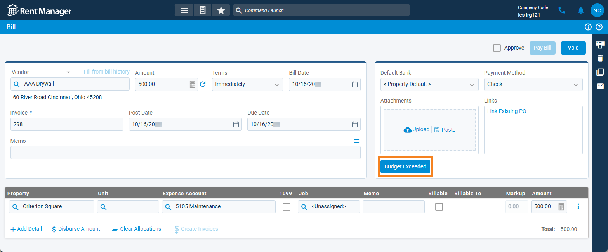

Source: https://rmxhelp.rentmanager.com/Topics/Express/KB/Budget-Exceeded-Resolve-Warning.htm
Resolve Budget Exceeded Warning
When you have active general ledger (GL) account budgets set up for properties, Rent Manager can generate warnings if financial activity involving a GL account is approaching or exceeding its designated budget. These budget warnings can be triggered by a single transaction or by the cumulative totals of all transactions within a budgeted GL account during the calculated period.
Establish System Preferences for Warnings
Related Privileges
| Group | Privilege | Column |
|---|---|---|
| System | System Preferences | View, Edit |
For more information, refer to Control User Access.
Before Rent Manager can generate warnings for budget overages, you need to set up the calculation methods.
-
Go to
 arrow_forward
arrow_forward  Administration, then go to .
Administration, then go to . -
In the Auto Fill section, adjust the settings for editing the final budget columns as desired. For more information, refer to Budget (System Preferences).
-
In the Budget section, enter and select information in the fields below.
Option Description Basis to Validate
The accounting method used to calculate overages to the budget.
Accrual
Calculates transactions within budgeted GL accounts as they are posted in Rent Manager, regardless of payment status.
Cash
Calculates transactions within budgeted GL accounts when payment has been made or received.
Calculation Method
The frequency used to determine how overages are calculated.
Annually
If transactions approach or exceed the amount budgeted for the fiscal year, notify the user.
Monthly
If transactions approach or exceed the amount budgeted for the month, notify the user.
Quarterly
If transactions approach or exceed the amount budgeted for the quarter, notify the user.
Consider approved purchase orders in calculations
Include approved purchase orders with transactions that affect the budget in the overage calculations.
Enable restriction of purchase order approval when over budget
Indicate that, if a purchase order exceeds the budgeted amount for a GL account, only a user with the privilege of Override budget restriction when approving POs can approve the purchase order.
More Information
The Override budget restriction when approving POs privilege displays only after checking this option and clicking Save. For more information, refer to POs/Estimates Privilege Group.
Percentage to begin budget warnings
The percent value of budget funds that, when exceeded, triggers a warning to users.
For example, a value of 90 indicates that when 90% of the funds allocated to a budgeted GL account have been spent, or if a transaction would cause you to exceed the 90% threshold, Rent Manager begins warning the user during transactions involving that GL account.
To be notified only when amounts exceed the budgeted amount, enter 100.
Transaction types can be specified in the Transactions to consider budget percentage warnings option.
Transactions to consider budget percentage warnings
The transaction types that display warnings regarding budget overages.
Transactions that reach or exceed the percentage specified in Percentage to begin budget warnings but are below the budgeted amount display warnings in yellow, and amounts beyond the budgeted amount display in red.
Checks
Generates warnings for checks not linked to a bill if a line item approaches or exceeds the budgeted amount for the selected GL account.
Credit card transactions
Generates warnings for credit card transactions that approach or exceed budget limits.
Pending purchase orders
Generates warnings for purchase orders that are not yet approved if they approach or exceed budget limits.
Unapproved/Unpaid bills
Generates warnings for bills. Bills that require approval display a warning before approval is granted, while bills that do not require approval display a warning until they are paid. The warning is removed after the bill is paid or approved.
The warning on a bill displays based on the budget of the GL account as of the bill's Post Date.
-
Click Save.
The system preferences are updated and warnings display for transactions based on your selections.
Handling Warnings
Additionally, if you entered a value for the Percentage to begin budget warnings system preference, warnings display when that percentage is reached for a single transaction or line item.
For example, if your system preferences are set up with the Calculation Method of Monthly and the Percentage to begin budget warnings set to 90, warnings are generated for any GL account transactions that exceed 90% of its budget allocation for that month. In this instance, if a GL account has a monthly budget of $3,000 and you attempt to create a $2,800 expense using that account, a warning displays with the amount highlighted yellow since it is over 90% of the account's monthly budget. If you attempt to add a $3,200 expense for that account, the warning displays the amount highlighted in red since it surpasses the account's monthly budget. This also applies if you are adding a smaller transaction that—when combined with other transactions for the account in that month—approach or exceed the set budget.
Financial records can still be created and saved with budget warnings by clicking Continue on the warning pop-up. Alternatively, you can review other transactions for the account nearing or exceeding its budget to verify that there were no errors that may be causing the issue.
Checks, Credit Cards, and Purchase Orders
When adding checks, credit cards, and purchase orders, budget warnings are generated when the total dollar amount of line items associated with a GL account approaches or surpasses its allocated budget. The warning displays when the creation process is complete.
Related Privileges
If a PO is created with an expense amount that exceeds the account's budget, it can be approved only by users with the following privileges enabled:
| Group | Privilege | Column |
|---|---|---|
| POs/Estimates | Approve purchase orders | Enabled |
| Override budget restriction when approving POs | Enabled |
For more information, refer to Control User Access.
Bills
When adding bills, budget warnings are generated when the total dollar amount of line items associated with a GL account approaches or surpasses its allocated budget. To view the details of the warning, click Nearing Budget or Budget Exceeded.
